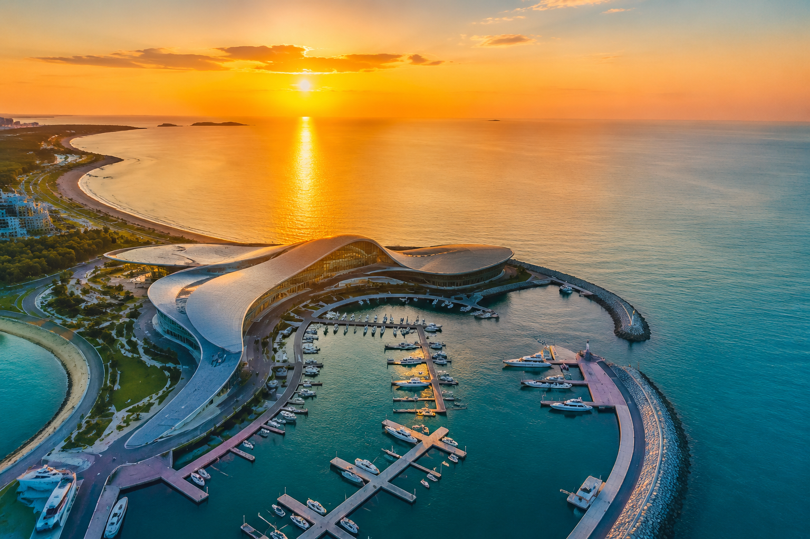
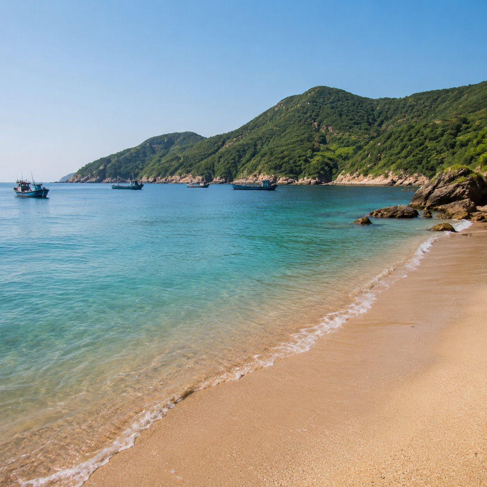
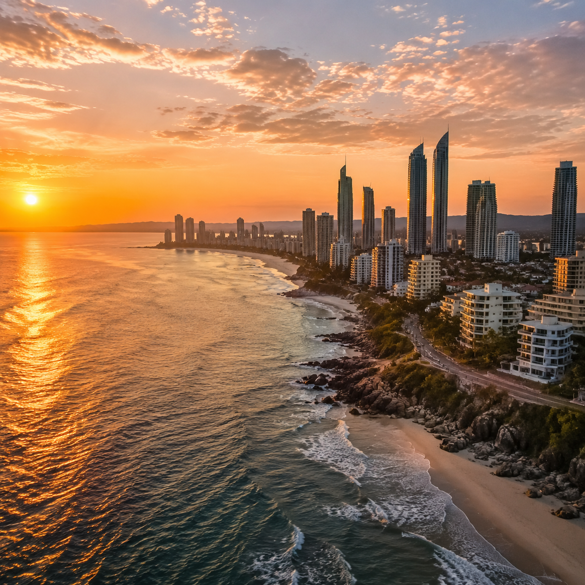
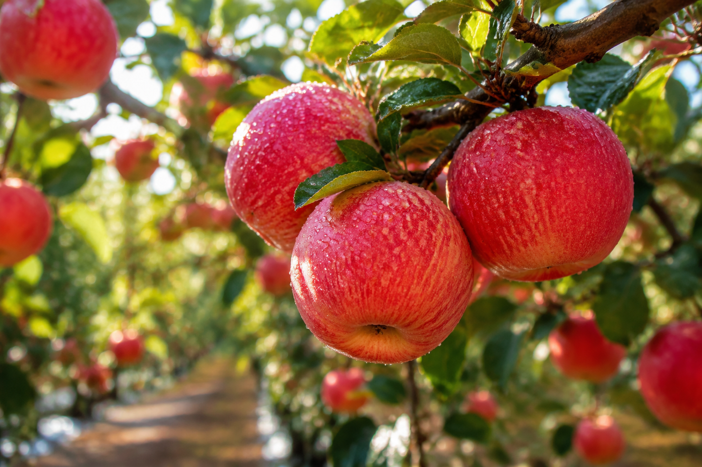
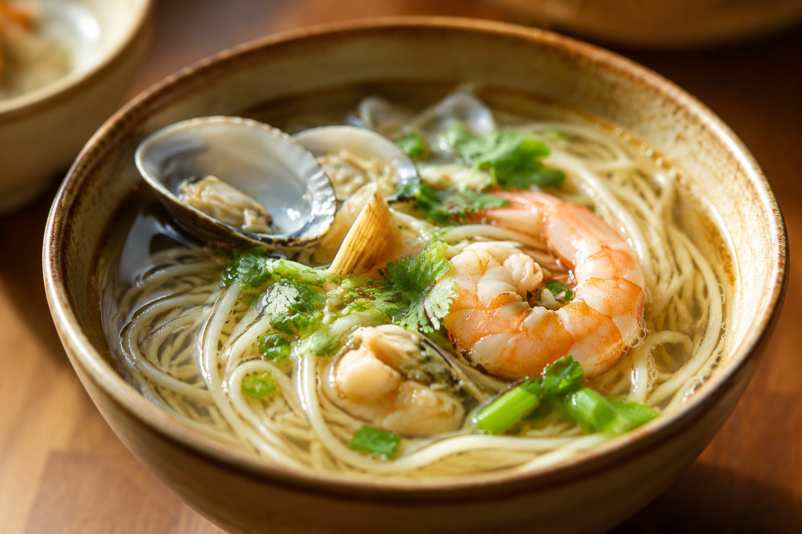
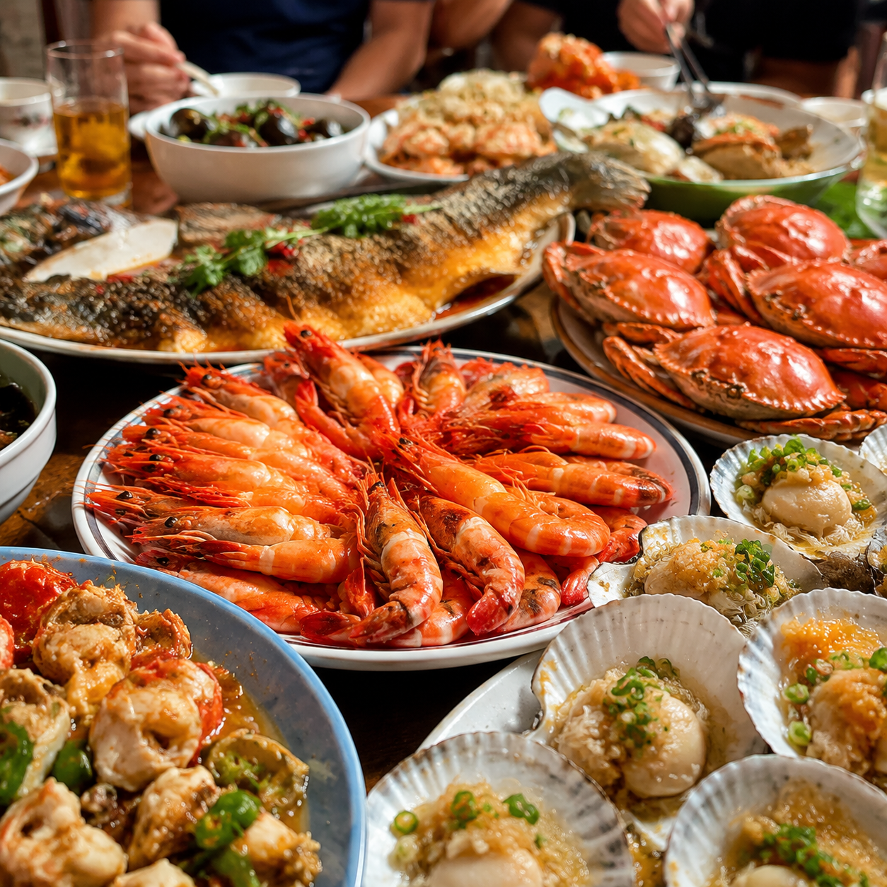

烟台 · 海岸线上的明珠
山东半岛东端的山海之城，909 公里海岸线，五千年海港历史
北纬 37° 的光、风、苹果花与潮汐
一座把海、山、酒、果装进同一座城的地方
8 大必去，山海与人文都在
从八仙传说到秦始皇御马，从百年酒窖到异国领事馆，每一处都是烟台的真实切面

蓬莱阁
八仙过海传说地，海上仙山的中国符号。站在丹崖俯瞰黄渤分界线，是整条山东海岸最不能错过的人文坐标。
八角湾海上仙境
烟台新晋的海上会客厅，国际会议中心与邮轮港比邻而居，黄昏时分海面金色一片，是看现代烟台的最佳角度。

养马岛
传说秦始皇御马之地，岛上有 4 座免费海湾可以独享，水清沙白堪比三亚，却没有任何商业化气息。

张裕酒文化博物馆
中国第一座专业葡萄酒博物馆，地下百年酒窖藏着张裕 1892 年至今的工业记忆，也是亚洲最大的酒窖之一。
烟台山
市区最老的灯塔与外国领事馆群，山海之间看烟台三百年开埠史，门票 0 元，是城市记忆最浓的一段海岸。
渔人码头
原木栈道伸入海面，傍晚渔船归来直接成交，是城里人最熟悉的烟台日常，也是看落日的最佳点之一。
12 道烟台味，海风与苹果甜
从清晨 4 块的渔港小面到百年鲁菜，从开渔季的鲅鱼到 1871 年引入的红富士苹果，烟台的胃很实在

鲅鱼水饺
烟台人的乡愁，4 月开渔季家家包饺子。皮薄馅大，一口下去全是海，没有鲅鱼水饺的冬天是不完整的。

烟台焖子
地瓜淀粉做底，浇上麻酱、蒜汁、虾油，路边摊三块五一碗，是最地气的街头味道，本地人的童年记忆。

海鲜烧烤
渔码头旁边现捞现烤，扇贝、海胆、皮皮虾，没有重酱，只有海盐和黄油，吃的就是一个鲜字。
烟台苹果
1871 年引入西洋种，150 年选育出红富士。烟台北纬 37° 的甜是其他苹果学不来的，咬一口嘎嘣脆。
葱烧海参
鲁菜经典，胶东海参配章丘大葱，汁浓味厚，是山东人请客的硬菜，上了国宴的老味道。
蓬莱小面
清晨四点的渔港早餐，手擀面加鱼卤、扇贝丁、海蛎子，3 块钱管饱，这是蓬莱人一天的开始。
3 天 2 晚，从老城到海岛
不走回头路，不挤网红点，全程公共交通 + 打车可达
烟台老城
烟台山公园 → 朝阳街历史街区 → 渔人码头落日 → 张裕酒文化博物馆。住烟台山附近，便于看老城夜景。
蓬莱仙境
蓬莱阁 + 八仙过海景区 → 田横山看黄渤分界 → 晚上回烟台莱山区海滨散步。拼车或大巴单程 1.5 小时。
海岛慢游
上午养马岛环岛（租电瓶车 60 元/天）→ 后海礁石滩发呆 → 下午龙口南山或直接返程。适合自驾与摄影。
加餐方案
招远淘金小镇 + 罗山国家森林公园（地质奇观），或栖霞苹果园 + 牙山徒步，看季节选其一。
选对季节，烟台翻倍
烟台的四季可玩度差异很大，按你的偏好选月份
苹果花海铺满丘陵，樱花在渔人码头，蓬莱阁的雾最多。性价比最高的季节，人少景美。
推荐 · 5 月最佳海水浴场全面开放，金沙滩、养马岛、三十里堡都是下海点。啤酒节 7-8 月最热闹，住宿要提前订。
旺季 · 7 月中高峰开渔季 + 苹果丰收 + 葡萄成熟，是烟台最丰盛的 90 天。吃海鲜的最佳时刻，也是摄影出片率最高的季节。
推荐 · 9-10 月最佳雪后海岸的蓬莱阁像水墨画，民宿与机票打到骨折价。温泉和滑雪在周边，缺点是部分海岛航线停运。
淡季 · 性价比最高出发前看一遍，少踩 80% 的坑
交通 / 住宿 / 季节性事项的硬核经验
高铁
青岛 1.5h、济南 3.5h、北京 5h、上海 6.5h 直达。烟台南站是主站，蓬莱站方便去仙境。
自驾
沈海高速 / 荣乌高速 / 烟海高速三条动脉直达。市内停车比一线城市宽松，海岛段注意限行。
住宿
烟台山公园附近看老城，莱山大学城适合自驾家庭，蓬莱阁脚下看海上日出。海景房溢价 30-50%。
注意事项
海鲜过敏提前备药，海边紫外线强必涂防晒；渔家乐选活鲜称重，避免"死鲜充活"；7-8 月注意台风预警。
出发吧，去看烟台的海
北纬 37°，五千年海港
等你赴一场山海之约